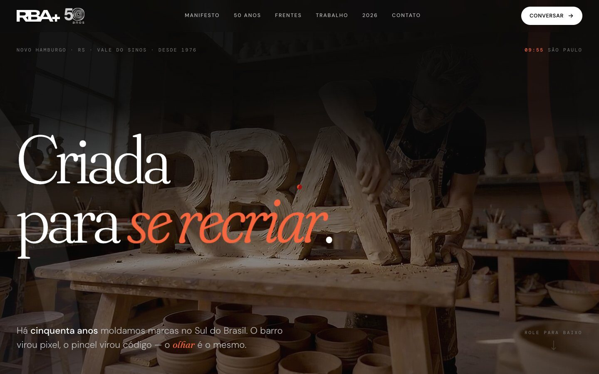
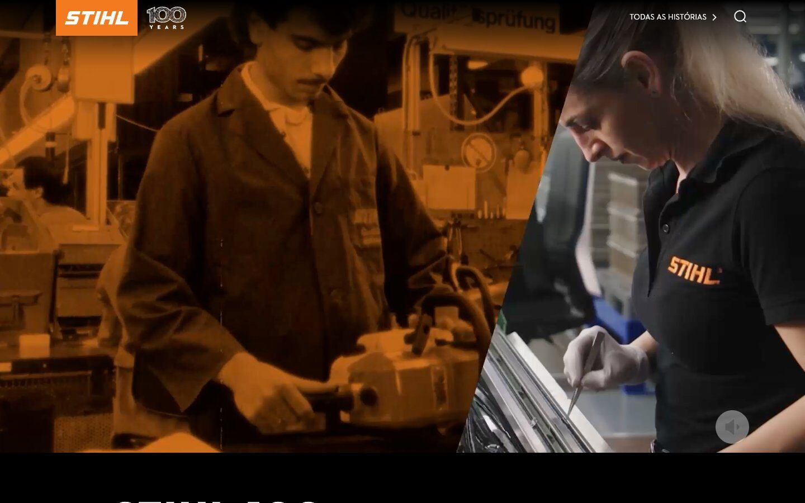

Cinquenta anos de ofício diante da maior mudança da profissão
A RBA+ atende contas como JBL e STIHL. A IA generativa mudou o custo de produzir uma peça e ameaçava transformar a agência em fornecedora de volume. A direção não queria ferramentas soltas nem medo difuso: queria saber onde a IA entra, onde não entra e o que muda no trabalho de cada pessoa.
"Criada para se recriar." O mote dos 50 anos virou também o mote do programa.
Do diagnóstico à operação
O programa começou com imersão nas áreas e um diagnóstico levado à direção. Daí saiu um plano por etapas, em que cada frente precisa provar valor antes de a próxima começar.
SIM: a régua da marca virou software
O centro do programa é o SIM, um sistema de inteligência de marca. Ele confere textos e imagens contra as regras de cada cliente, redige peças já dentro da voz da marca e aprende com o acervo real da agência. Começou com a JBL e hoje também atende a STIHL.
- Checar: aponta o que foge da marca antes de a peça chegar ao cliente
- Redigir: gera textos on-brand a partir do briefing real
- Calibrar: as guardiãs de marca da agência validam o sistema, e a régua evolui com elas
Ao lado do SIM, o RBA Design Studio leva as regras de cada marca para a produção de criativos em escala.
Letramento em IA com a mão na massa
Nenhum sistema funciona se a equipe não confia nele. As trilhas foram montadas por área, com casos reais das contas da agência: turmas de criação e de design, mídia, social e financeiro, além de um pacote de habilidades de design para o dia a dia. Numa das turmas, um participante resumiu: o trabalho de algumas horas com IA levaria uma semana no Photoshop.
O que já está no ar


- Site dos 50 anos: o conceito "Artesão Digital" — o barro virou pixel, o pincel virou código — se tornou o site institucional da agência
- STIHL 100 anos: localização completa do site global do centenário para o Brasil e a América Latina — histórias, jogos e jurídico em português e espanhol, preservando o design original da matriz
Um case ainda sendo escrito
O programa segue em andamento. As próximas etapas levam o sistema ao dia a dia de toda a criação. Este case será atualizado com os resultados.